„Яж по-малко и се движи повече.“ Това ми каза и третият диетолог. Три седмици по-късно за пръв път не отворих хладилника след вечеря — и мъжът ми попита какво правя.
Понеделник, 9 ноември 2026 г. | 6 мин четене
От Десислава МариноваРедактор, рубрика „Здраве“
Добро утро. Вземете си кафето — без захар, ако пак сте на диета от понеделник.
Нека поговорим за онзи момент в 22:30, когато всички вкъщи вече спят, а вие стоите пред отворения хладилник.
Не сте гладна. Вечеряхте преди три часа. Но нещо вътре във вас крещи за едно парче. После за още едно. Знаете как ще свърши, но ръката вече посяга.
И после онази тежест в леглото. Не в стомаха — в главата: „Пак. Пак не издържах.“
Не сте сама. И не сте слаба.
Аз съм Росица от Стара Загора. На 47 години.
Преди три месеца бях на път да се откажа завинаги, след като трима диетолози ми казаха едно и също, с едно и също снизхождение: „Яж по-малко и се движи повече. Въпрос на воля е.“
Дадоха ми режим от 1 200 калории и ме изпратиха вкъщи — сякаш не бях опитвала точно това двайсет пъти.
Строги диети? Издържах до сряда. В четвъртък вечер изяждах всичко, което бях „спестила“ през седмицата, и после се мразех.
Добавки и хапчета? Стотици евро за шейкове, чайове „за отслабване“ и капсули с берберин, от които стомахът ми се свиваше на топка. Спрях ги след десет дни.
Фитнес? Записвах се три пъти. Прибирах се изморена — и още по-гладна.
Бях приключила.
Приключила да бъда „жената без воля“ в очите на хора, които никога не са стояли пред моя хладилник.
Уморена да слушам „просто не яж след шест“, докато в осем вечерта ми се виеше свят от глад.
Приключила с броенето на калории в телефона, което всяка вечер свършваше с едно и също изтриване.
Бях готова да приема, че „така съм устроена“ — докато колежката ми Даниела, с която от години сме „сестри по диети“, не ме хвана за ръката и не каза: „Роси, проблемът не е във волята ти.“
Това, което ми показа, не беше поредното чудо. Не беше измама.
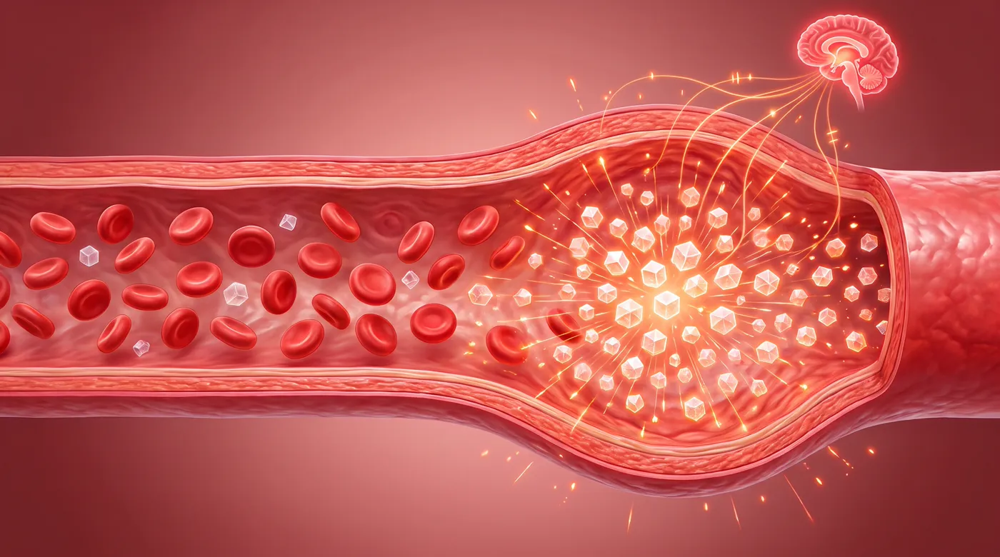
Горе: механизмът, който пали глада вечер — люлката на кръвната захар
Беше нещо, което най-после ми обясни защо всичко останало се проваляше.
Когато се храним — особено с хляб, тестени и сладко — захарта в кръвта скача бързо. Тялото я сваля също толкова бързо. И когато падне, мозъкът получава сигнал за тревога: „Яж. Веднага.“
Това не е характер. Това е химия. И се повтаря по няколко пъти на ден — най-силно вечер, когато сте уморена.
Диетата спира храната. Но не спира люлката.
Волята издържа час. Но не и сигнал, който идва отвътре всяка вечер.
Шейкът просто замества една вечеря.
Ето защо правех всичко „както трябва“ и пак губех.
Берберинът е растително вещество, което се съдържа в кисел трън (берберис). Изследва се от години заради връзката му с ензима AMPK — „метаболитния превключвател“ на клетката — и с начина, по който тялото се справя със захарите и с апетита.
Проблемът е, че на капсули голяма част от него се губи в стомаха и черния дроб. А при много жени капсулите дразнят стомаха — точно като при мен.
А начинът, по който FitPatches го подава, е просто лепенка. Слагаш я сутрин на ръката. Носиш я през деня — берберинът и растителните екстракти се подават постепенно през кожата, без да минават през стомаха.
Не е поредната забрана. Помага ти да овладееш глада, вместо да се бориш с него.
Без поредните шейкове. Без броене на калории до полунощ. Без капсули, които дерат стомаха.
Чак когато го разбрах, потърсих дали има изследвания. Има. Хиляди научни публикации за берберина, включително клинични проучвания за кръвната захар и метаболизма. Повечето са с берберин на таблетки — и точно затова ме спечели идеята да го получавам, без да минава през стомаха.
Но честно казано — не числата ме убедиха. Убеди ме това, че най-после някой ми обясни защо волята не стига.
Ето я истината: индустрията на диетите няма интерес да знаете това. За нея вие сте по-ценна като жена, която всеки понеделник започва отначало.
Но думите на Даниела промениха вечерите ми. И могат да променят вашите.
Искате ли да заспивате, без да мислите за шкафа със сладкото? Да сте на семейните снимки, а не зад тях? Да си кажете вечер най-чаканото изречение — „Днес се справих.“?
Моята история следва. Тя е сурова и честна, и затова ви я споделям.
Ако някога сте се чувствали виновна пред собствения си хладилник, продължете да четете.
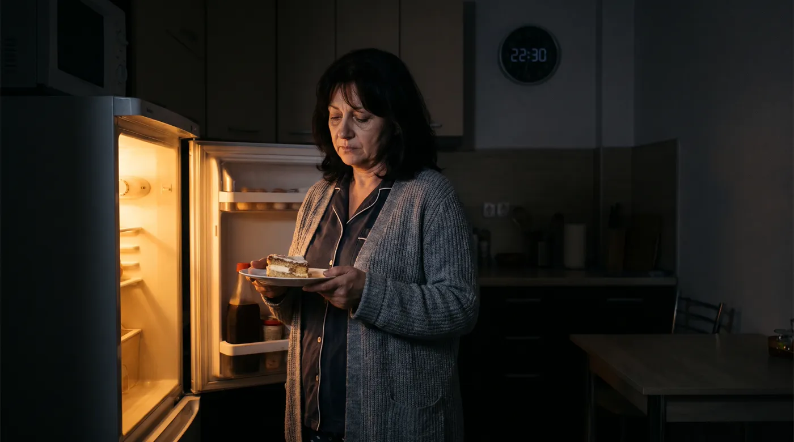
„ОТ 22:30 ПРЕД ХЛАДИЛНИКА ДО СПОКОЙНИ ВЕЧЕРИ“
Историята на Росица ще ви даде надежда…
„Никога не съм мислила, че ще разказвам такава история, но това, което ми се случи, е твърде важно, за да мълча.
Преди четири месеца преживях най-унизителния момент в живота си — на абитуриентския бал на собствената ми дъщеря.
Фотографът подреждаше семействата за снимка пред ресторанта. А аз се скрих зад мъжа си. Роклята, която бях купила „за когато отслабна“, стягаше така, че не можех да дишам.
И тогава чух как една от другите майки прошепна: „Виж Роси как се е занемарила. Едно време беше най-хубавата в класа.“
Целият шум утихна за мен. Дъщеря ми стисна ръката ми, а аз стисках зъби, за да не се разплача. Прекарах цялата вечер на масата, без да хапна нищо пред хората — гладна, напрегната, усмихната насила.
Знаете ли какво направих, когато се прибрахме в два през нощта? Застанах пред хладилника. И изядох всичко, което си бях отказала на бала.
Постоянният глад вечер. Подуването. Умората след обяд, която гонех с кафе и вафла. Всичко това ме превръщаше в жена, която не познавах.
Бях жертва на стреса, на годините, в които „нямах време за себе си“, и на тялото, което след 40 просто спря да ме слуша. Живеех в тих, постоянен срам.
Ходих при ТРИМА диетолози, които казаха едно и също: по-малко калории, повече движение, повече воля.
Като жена, която иска да е на снимките с децата си, а не зад тях, това беше кошмар.
Бях готова да се предам, когато Даниела ми се обади с нещо, което щеше да промени вечерите ми завинаги.“
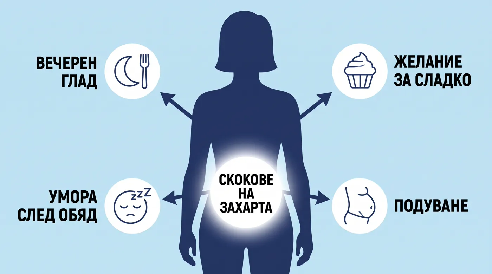
„ОТНАЧАЛО МИСЛЕХ, ЧЕ Е ПОРЕДНАТА ИЗМАМА… ДОКАТО НЕ ДОЙДЕ ДЕВЕТАТА ВЕЧЕР“
„Даниела следеше всички групи за жени след 40 и беше открила продукт, наречен FitPatches. „Това е берберинът, но без капсулите“, каза ми тя.
Бях дълбоко скептична. След години шейкове, чайове и празни обещания нямах никакви очаквания. Но какво имах да губя? Плаща се чак при получаване.
Започнах със сутрешната лепенка всеки ден. Изваждаш една. Залепваш я на ръката. Забравяш за нея.
Напълно неосъзнаваща, че вечерната ми война с хладилника току-що беше започнала да утихва.
На деветата вечер мъжът ми отвори шкафа за чая. Шоколадът, който бях купила в неделя, стоеше там. Неотворен.
ИЗВИКАХ толкова силно, че той се стресна — защото чак тогава осъзнах, че не съм се сетила за него нито веднъж.“
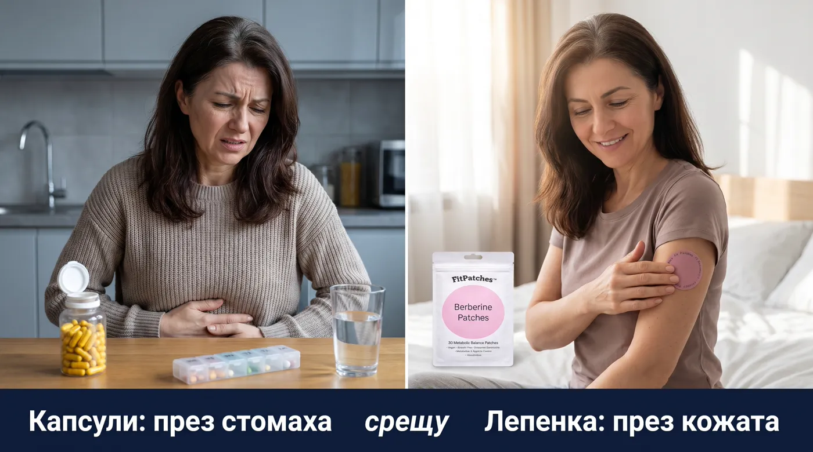
ПРОМЯНАТА БЕШЕ ТИХА, НО ЯСНА
„Онова вечерно „яж веднага“, което ме вдигаше от дивана всяка вечер — този път просто не дойде.
Вечерях с децата. Измих чиниите. Седнах да гледам сериал. И кухнята остана затворена.
За пръв път от години заспах без чувство за вина.
Желанието за сладко следобед отслабна — вече не държах вафли в чекмеджето на бюрото.
Имах сили да изкарам деня, без следобедната „кома“ след обяд.
Вечер се чувствах по-лека. Дънките, които следобед стягаха, вече не ме караха да разкопчавам копчето под бюрото.
Мъжът ми стоеше на вратата на кухнята: „Роси… какво става с теб?“
За пръв път от месеци се смях, вместо да се оправдавам.“
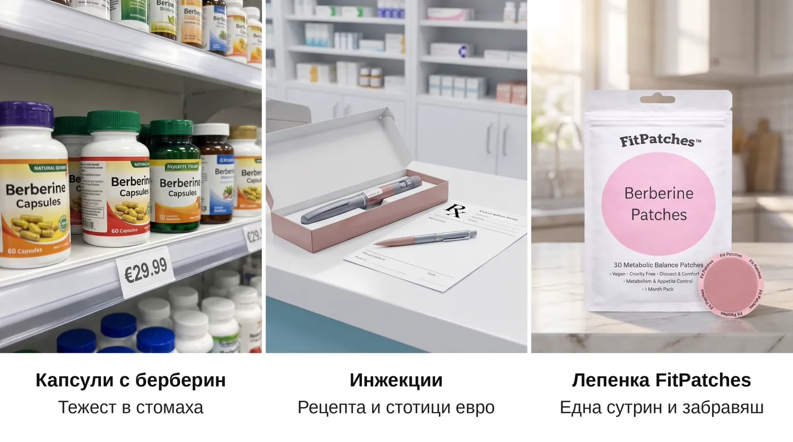
„СЛЕД 6 СЕДМИЦИ ДИЕТОЛОЖКАТА МИ ПОПИТА КАКВО ПРАВЯ РАЗЛИЧНО“
„През следващите седмици промяната продължи. Храната вече не управляваше всяка моя мисъл.
Когато отидох на контролен преглед, диетоложката погледна дневника ми и попита: „Какво правите различно? Вечерите ви са съвсем други!“
Когато ѝ показах розовата лепенка на ръката си, тя просто кимна и си записа името.
Знам какво си мислите. „Лепенка? Сериозно?“
Аз мислех същото. Но после осъзнах нещо.
Точно защото не е капсула, не минава през стомаха ми. Точно защото е на ръката ми, я виждам и не я забравям. И точно защото не е поредната забрана, нямаше от какво да се отказвам в четвъртък вечер.
Всичко друго, което пробвах, искаше от мен още воля. Това — не.
Тук не става въпрос за магическо отслабване. FitPatches не топи мазнини. Просто ми върна КОНТРОЛА над вечерите.
А когато вечерите са твои, всичко останало идва по-лесно.“
КАК РАБОТИ ЛЕПЕНКАТА, КОЯТО ПРОМЕНИ ВЕЧЕРИТЕ МИ
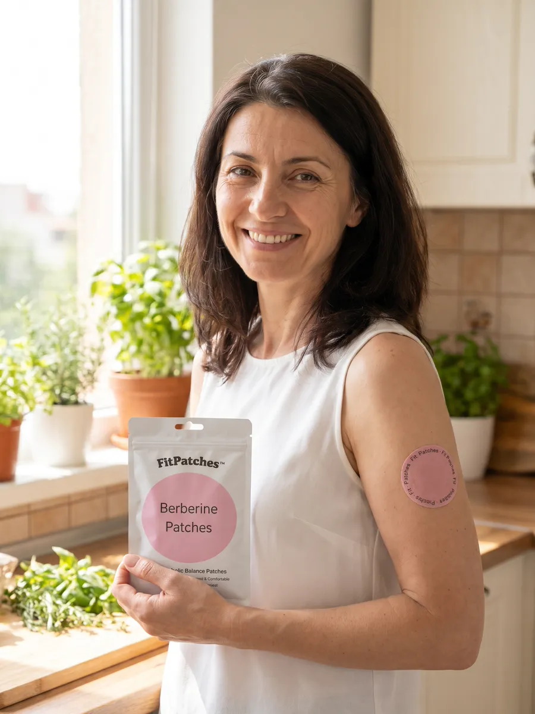
Лепенката FitPatches работи чрез 4 ключови предимства:
1. БЕРБЕРИН ОТ ПРИРОДАТА. Растителното вещество от кисел трън, изследвано заради ензима AMPK, апетита и усвояването на захарите. С растителни екстракти и без изкуствени стимуланти.
2. НЕ МИНАВА ПРЕЗ СТОМАХА. За разлика от капсулите, лепенката подава съставките през кожата. Без тежест, без подуване, без вкус и мирис.
3. ПОСТЕПЕННО ПРЕЗ ДЕНЯ. Една лепенка сутрин — и съставките се подават бавно, а не наведнъж. Без три капсули на ден и без забравени дози.
4. БЕЗ АБОНАМЕНТ И ПРЕДПЛАЩАНЕ. Плащате на куриера, когато получите пратката. Няма автоматични плащания.
ЗАЩО ИНДУСТРИЯТА НА ДИЕТИТЕ ПРЕДПОЧИТА ДА НЕ ЗНАЕТЕ
Проучванията показват, че над 80% от сваленото с диета тегло се връща до 5 години.
Всяко връщане значи нова програма, нов шейк, нов „детокс“. Месец шейкове струва между 40 и 80 €. Инжекциите за отслабване — стотици евро на месец, и то с рецепта.
Една лепенка FitPatches? 0,27 € на ден при пакета 3+2.
Не твърдя, че има заговор. Твърдя, че индустрията печели, когато вие започвате отначало всеки понеделник. А жена, която най-после се справя, не се връща.
Тази малка лепенка обаче ви дава шанс да спрете люлката — вечер по вечер.
СЕСТРИ ПО СЪДБА: КАКВО КАЗВАТ ДРУГИТЕ
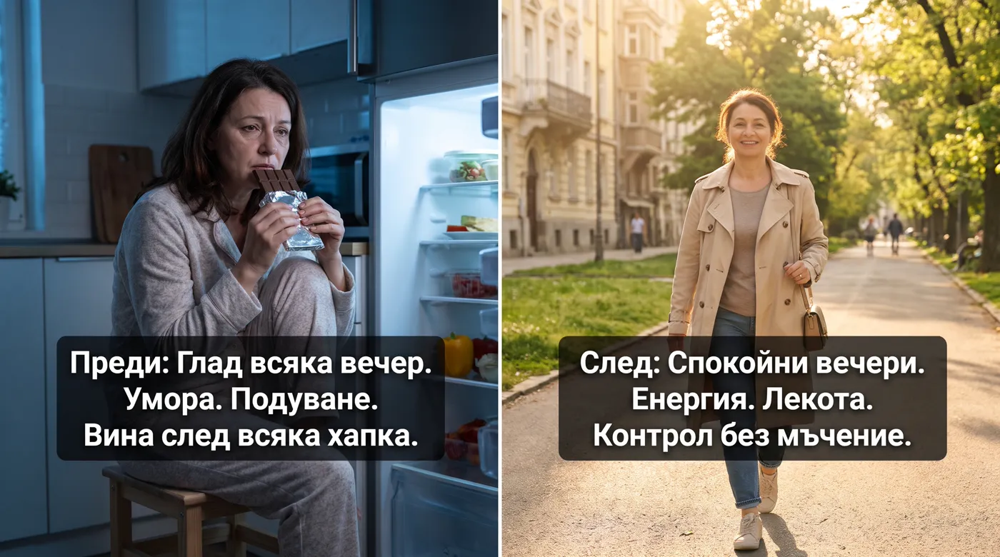
Откакто FitPatches се появи в българските групи за жени след 40, хиляди клиенти го пробваха. Средната оценка в магазина е 4,8 от 5 според 2 365 клиенти:
„След две седмици ползване имам много повече енергия и по-малко желание за сладко.“ — Катя Димитрова
„Забелязвам, че порциите ми намаляха значително, откакто започнах да ползвам лепенките.“ — Анелия Радулова
„Вече не мисля за храна на всеки два часа. Чудесен резултат!“ — Огнян Ахмедов
ПРЕДСТАВЕТЕ СИ ДА ВЪРНЕТЕ СПОКОЙСТВИЕТО НА ВЕЧЕРИТЕ СИ
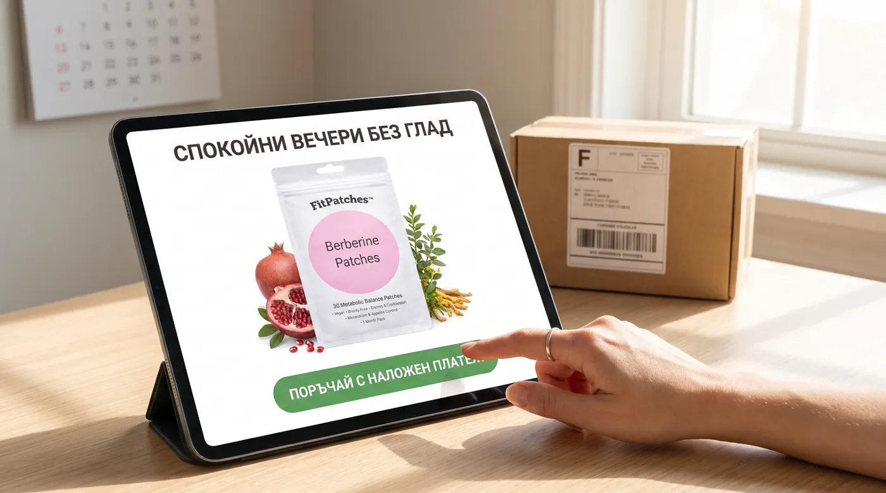
Сега си представете следващата си вечер.
Вечеряте с всички. Измивате чиниите. И затваряте кухнята — не със стиснати зъби, а защото просто не ви се яде.
Сядате на дивана. Шоколадът е в шкафа. И вие дори не се сещате за него.
Лягате си. И за пръв път от години последната мисъл преди сън не е „пак не издържах“.
Ето какво още може да се промени дотогава:
Вечерният глад отслабва — без да броите калории до полунощ.
Желанието за сладко следобед утихва.
Имате енергия след обяд — без кафе и вафла.
По-малко подуване вечер и дрехи, които не стягат.
Спестявате стотици евро от шейкове, чайове и програми.
ВАЖНО: ПАЗЕТЕ СЕ ОТ ИМИТАЦИИ
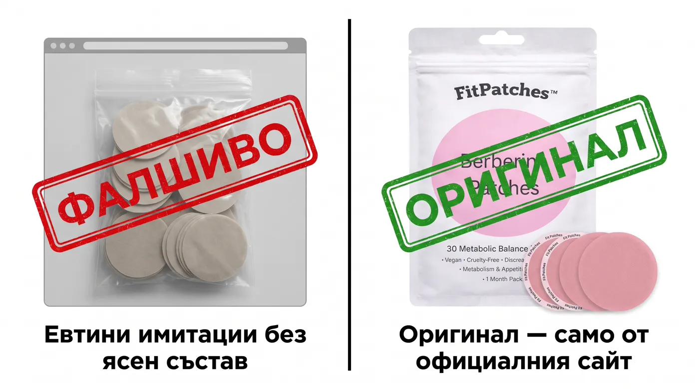
Покрай интереса в групите в интернет вече се продават евтини „берберинови“ лепенки без ясен състав — без етикет на български, без адрес на производител и без възможност да платите при получаване.
ВНИМАНИЕ: Единственият начин да получите оригиналния FitPatches е през официалния сайт.
Офертата 3+2 подарък важи, докато е активна в официалния магазин!
САМО ОНЛАЙН ОФЕРТА!
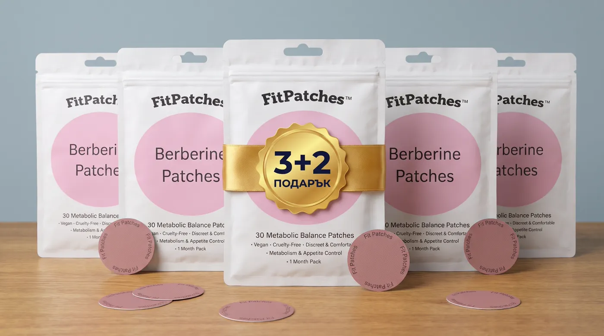
НАЙ-ИЗГОДНИЯТ ПАКЕТ:
3+2 ПОДАРЪК — 5 ПАКЕТА ЗА 5 МЕСЕЦА
ЗА ЧИТАТЕЛИТЕ НА СТАТИЯТА:
С пакета 3+2 подарък получавате 5 пакета (150 лепенки) за 39,99 € вместо 149,95 € — по 0,27 € на ден. Наложен платеж. Доставка с Еконт за 2–4 работни дни.
Не ме мразете, но свалих половин звезда — и ето защо.
FitPatches не е хапче за отслабване и не „топи“ мазнини. Не ми свали килограмите за седмица и никой не бива да ви обещава това.
Но точно затова ще ви кажа и другото: това е единственото нещо, което пробвах, след което вечерите ми спряха да бъдат война. Не стана чудо. Просто спрях да се боря с хладилника. След години.
За жена в моето положение това не е малко обещание. То е единственото, което има значение.
Онова, което прави, е да ви даде нещо, което можете да правите всяка сутрин за пет секунди — без да гладувате и без да броите.
За мен това се оказа достатъчно.
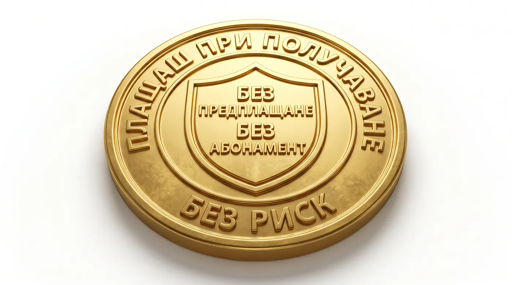
Ето как изглежда това на практика.
Поръчвате днес. Попълвате име, телефон и адрес. До 2–4 работни дни куриерът на Еконт е при вас.
Плащате чак тогава — на куриера, когато държите пакета в ръце. Без карта, без предплащане.
Слагате една лепенка всяка сутрин и давате на тялото си поне 4 седмици. Толкова е нужно, за да видите дали вечерите ви се променят.
Ако не усетите разлика в апетита, просто не поръчвате пак. Няма абонамент. Няма автоматични плащания.
С други думи: не плащате нищо предварително. Един пакет излиза 0,50 € на ден, а при 3+2 — 0,27 € на ден. По-малко от една вафла.
Вече знаете какво ви чака, ако не направите нищо. Тази вечер. 22:30. Светлината на хладилника.
Мариана ГригороваПробвах ги и съм много доволна! Апетитът ми е овладян!
Харесва ми · Отговор · 👍 5 · 54 мин
Гинка МосковаИзползвам ги само от седмица, но вече виждам разлика. Определено действат.
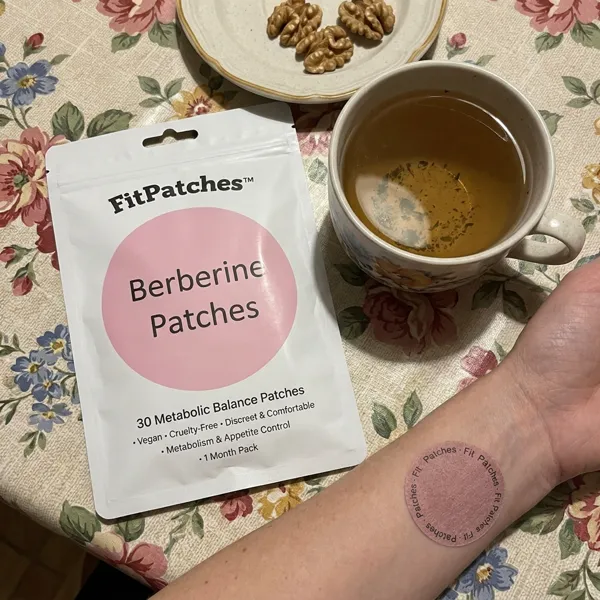
Харесва ми · Отговор · 👍 14 · 1 ден
Боряна АтанасоваНай-доброто решение за контрол на апетита, което съм опитвала.
Харесва ми · Отговор · 👍 6 · 19 ч
Гаврил СтанковНапълно доволен! Лепенките наистина помагат да се чувствам сит.
Харесва ми · Отговор · 👍 7 · 1 ч
Мими ПоповаПродуктът е страхотен! Не усещам глад през деня и вече виждам разлика в талията.
Харесва ми · Отговор · 👍 9 · 1 ч
FitPatches BGБлагодарим, Мими! За всички, които питат: изпращаме с Еконт, пристига за 2–4 работни дни и плащате при получаване.
Харесва ми · Отговор · 👍 11 · 1 ч
Георги АхмедовВече година ги ползвам. Усещам се много по-добре и енергичен през целия ден.
Харесва ми · Отговор · 👍 8 · 2 дни
Петя ГалеваНаистина ме изненадаха тези лепенки. Препоръчвам ги с две ръце.
Харесва ми · Отговор · 👍 13 · 23 ч
FitPatches BGВажно: ако пиете всеки ден лекарства за кръвна захар или кръвно налягане, първо попитайте лекаря си — берберинът може да влияе на действието им. При бременност и кърмене също се консултирайте с лекар.
Харесва ми · Отговор · 👍 9 · 20 ч
Рекламна публикация на FitPatches. Историята на Росица е събирателен образ по разкази на клиенти, а снимките в статията са илюстративни. Отзивите и коментарите са от страницата на продукта на fitpatches.net.
Индивидуалните резултати могат да варират. FitPatches не е лекарство, не лекува и не замества медицинска консултация или назначена терапия.
Ако пиете лекарства за кръвна захар или кръвно налягане, ако сте бременна или кърмите, консултирайте се с лекар преди употреба.